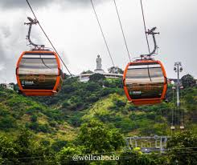
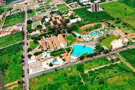
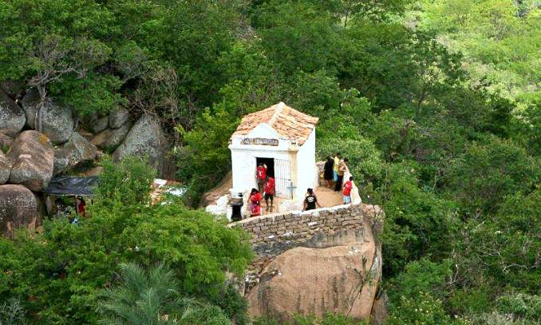

INÍCIO
CRATO
JUAZEIRO DO NORTE
BARBALHA
Locais Religiosos
Locais Turísticos
Restaurantes e Bares
Hotéis e Pousadas
Museu Cívico e Casa Padre Cícero
Mais Informações
Colina do Horto
Mais Informações

Teleférico do Horto
Mais Informações

Verdes Vales
Mais Informações
Santuário dos Repteis
Mais Informações

Santo Sepulcro
Mais Informações